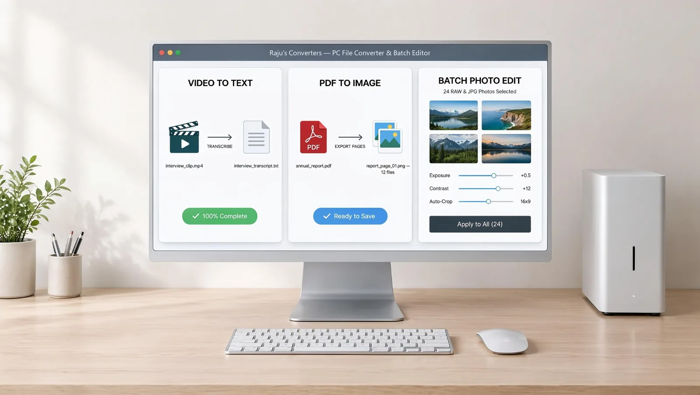
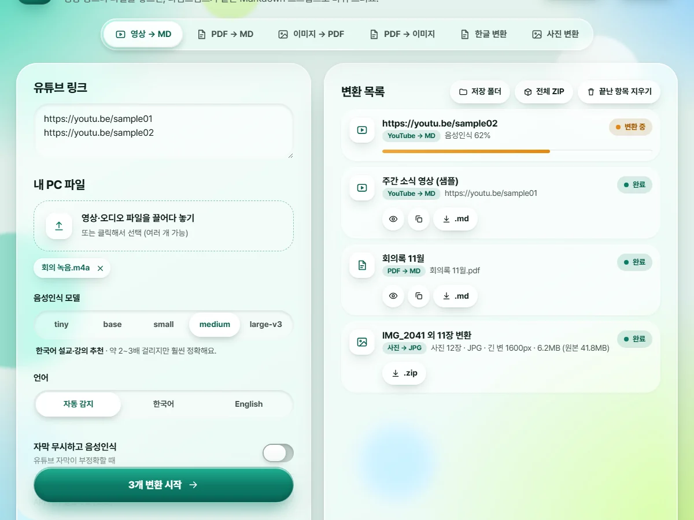

영상 → Markdown
시각이 붙은 스크립트예요. 유튜브 영상은 시각을 누르면 그 장면으로 이동해요.
# 주간 소식 영상 (예시)
- 출처: https://youtu.be/…
- 변환 방식: 유튜브 수동자막 (ko)
## 스크립트
[00:00] 안녕하세요, 이번 주 소식을 전해 드립니다.
[00:12] 먼저 다음 주 행사 안내입니다.

영상, PDF, 한글(HWP) 문서, 사진을 내 PC 안에서 바꿔 주는 무료 변환 도구예요. 파일을 인터넷에 올리지 않습니다.

화면의 파일 이름과 내용은 모두 예시입니다.
탭을 눌러 어떤 일을 할 수 있는지 살펴보세요.
유튜브 링크나 내 PC의 영상·음성 파일을, 시각이 붙은 Markdown 스크립트로 바꿉니다.
제목, 목록, 표를 살려서 Markdown 문서로 바꿉니다.
올린 이미지를 순서대로 모아 PDF로 묶습니다.
쪽마다 PNG나 JPG 한 장씩, 폴더와 ZIP으로 받습니다.
.hwp와 .hwpx를 PDF, Markdown, 이미지로 바꿔요.
HEIC를 JPG로 바꾸고, 긴 변 길이를 기준으로 여러 장을 줄여요.
화면은 예시 데이터로 만든 것입니다.
결과는 그대로 쓰기 좋은 형태로 만들어 드려요.
시각이 붙은 스크립트예요. 유튜브 영상은 시각을 누르면 그 장면으로 이동해요.
PDF나 한글 문서의 표를 표 그대로 옮겨요.
| 구분 | 내용 | 비고 |
|---|---|---|
| 장소 | 회의실 A | 10:00 |
| 준비물 | 노트북 | 충전기 |
| 담당 | 김OO | — |
긴 변 길이를 정하면 비율을 지켜 줄여서 용량이 크게 줄어요.
홈페이지나 단톡방에 올리기 좋은 크기로, 위치 정보는 지워서 저장해요. (그림은 이해를 돕는 예시입니다)
매일 쓰는 도구라서 꼭 필요한 것만 담았어요.
변환은 모두 내 PC에서 돌아가요. 파일을 어디에도 올리지 않고, 화면도 내 PC 안에서만 열려요.
링크와 파일을 여러 개 올리면 차례로 변환해요. 하나가 실패해도 나머지는 계속 진행돼요.
.hwp와 .hwpx를 PDF, Markdown, 이미지로. 한컴오피스가 있으면 원본 모양 그대로 만들어요.
글자가 없는 스캔 PDF는 한국어 글자 인식(OCR)으로 읽어 텍스트로 만들어 드려요.
HEIC를 JPG로 바꾸고, 긴 변 길이를 정해 여러 장을 한 번에 줄여요. 위치 정보도 지울 수 있어요.
결과를 저장할 폴더를 내가 정하고, 껐다 켜도 기억해요. 저장 폴더 버튼으로 바로 열어 볼 수 있어요.